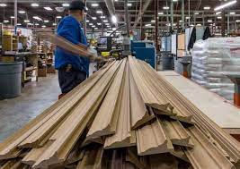
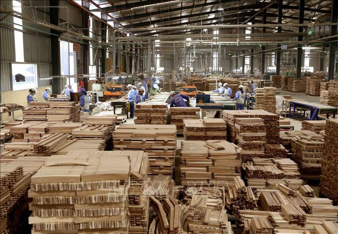

Un uso incorrecto de esta partida durante varios años hace que las estadísticas forestales indiquen una variación en las exportaciones de un producto en teoría más elaborado (madera perfilada vs. madera aserrada), pero que en la realidad no se refleja así, teniendo como causas principales un pobre criterio técnico que muestra la normativa peruana respecto a productos forestales maderables, niveles de transformación, procesos involucrados y definiciones de centros de transformación, lo que no ha favorecido ni esclarecido el panorama del sector maderero por años; tanto para empresarios, autoridades, o actores involucrados con los procesos de verificación y supervisión de la legalidad. El aprovechamiento de este vacío normativo por parte de algunos empresarios que les permite evadir procesos de verificación del origen del producto, impuestos y otros beneficios contables y financieros.
Recomendaciones • Implementar la infraestructura portuaria para la zona de Yurimaguas (Loreto), con el fin de poder habilitar una nueva ruta fluvial de exportación (más corta que la ruta Iquitos – Pucallpa) y aprovechar las buenas condiciones de la carretera Yurimaguas – Chiclayo, permitiendo reducir los tiempos de transporte para la región Loreto de 11 días hasta el puerto del Callao a 03 o 04 días hasta el puerto de Paita. • Desarrollar y difundir protocolos para los temas sanitarios y aduaneros por parte de las autoridades pertinentes a los diferentes usuarios de forma periódica. • Ampliar y actualizar constantemente la lista de países destinos con los que Perú tiene un tratado de manejo fitosanitario, con el fin de estandarizar procedimientos. • Habilitar sistemas de emisión de GTF que operen 24/7, con lo que se reducirían los tiempos y sobrecostos en el transporte. • Homogenizar protocolos, comunicaciones y conceptos en los diferentes puestos de control forestal ubicados en las rutas terrestres nacionales, para así prevenir errores de juicio al momento de las inspecciones, entre otras negligencias.
